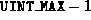
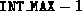
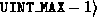

Every LSN is a three-tuple: wrap count, page ID, offset. Figure 2 shows the layout.
The wrap count is needed because the log is maintained in a bounded space and wraps around when it reaches the physical end of the space. The wrap count field gives the number of times the log has wrapped around. The current implementation stores the wrap count as an unsigned int. It is an error for the wrap count to exceed .
Figure 2: Layout of an LSN. In the current implementation, each field
is four bytes long.
The page ID and offset fields are required because the log can be read and written only in units of a page. The page ID and offset give the location of the start of the log record within the log.
Invalid LSNs are given the value: , , . The implementation ensures that LSNs never reach this value.
Implementation of the methods of class lsn_t (see lsn.h and lsn.C) is straightforward and will not be described.